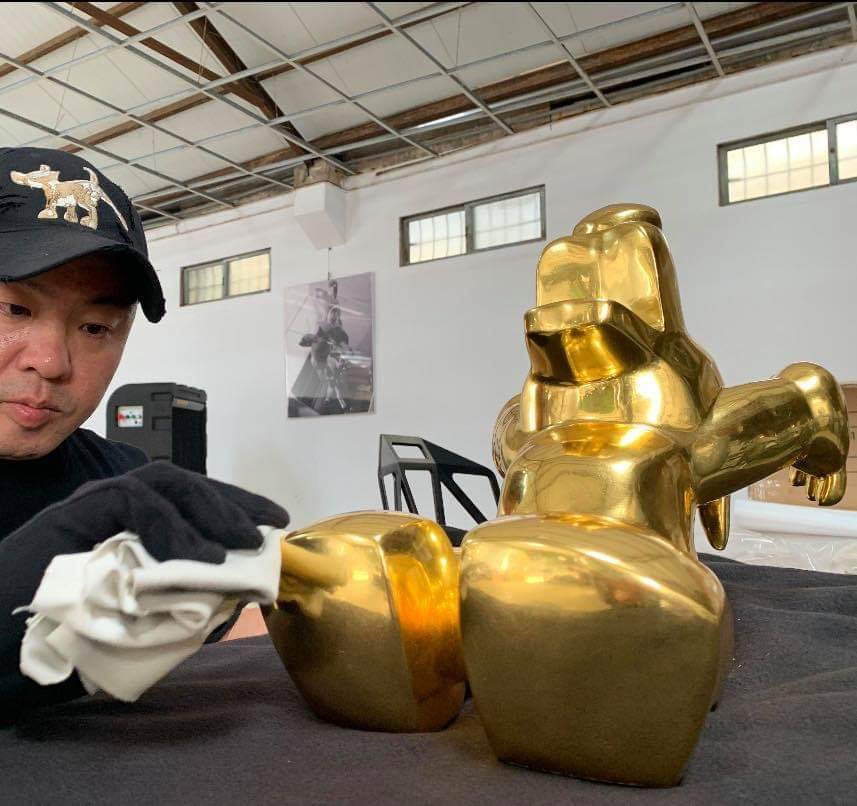
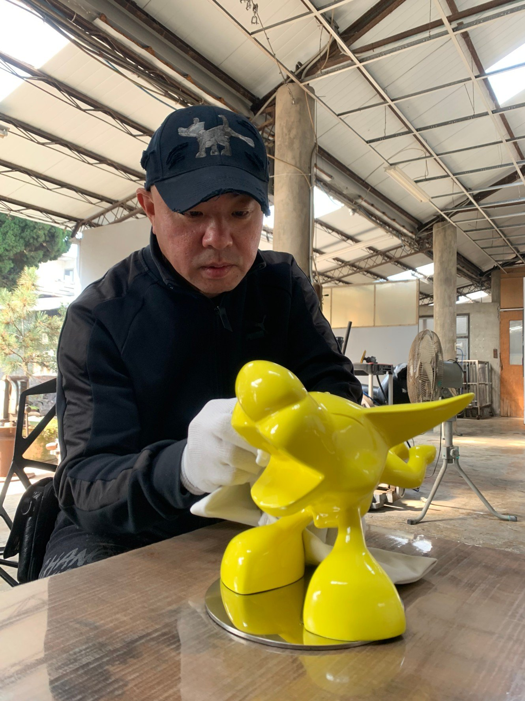
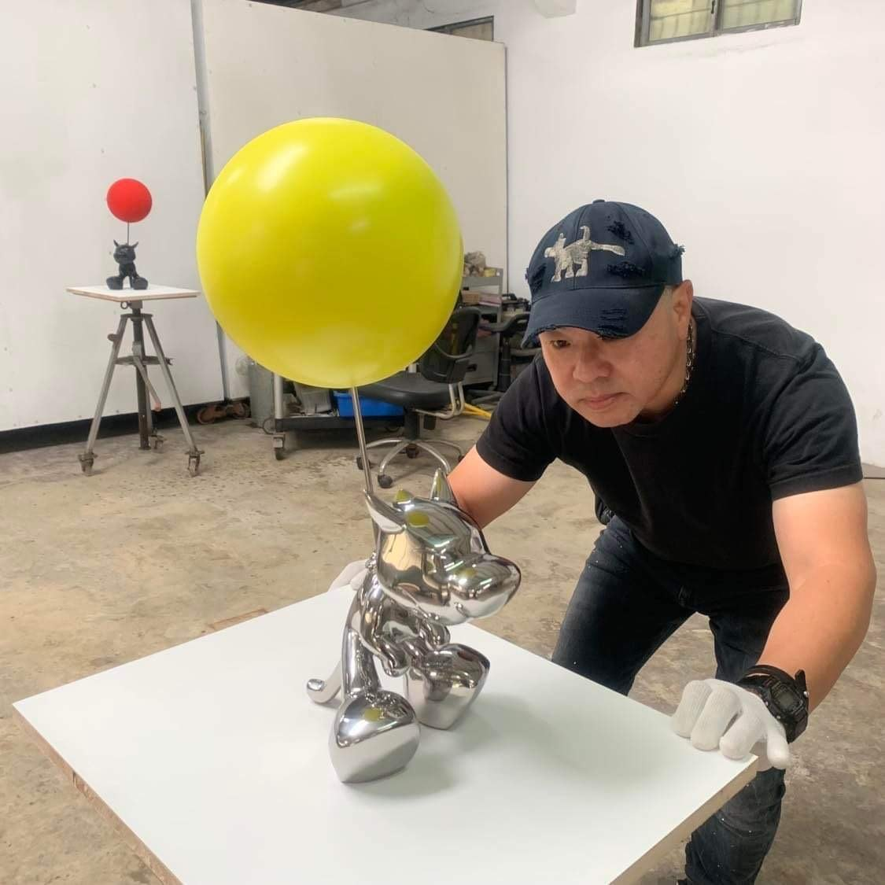
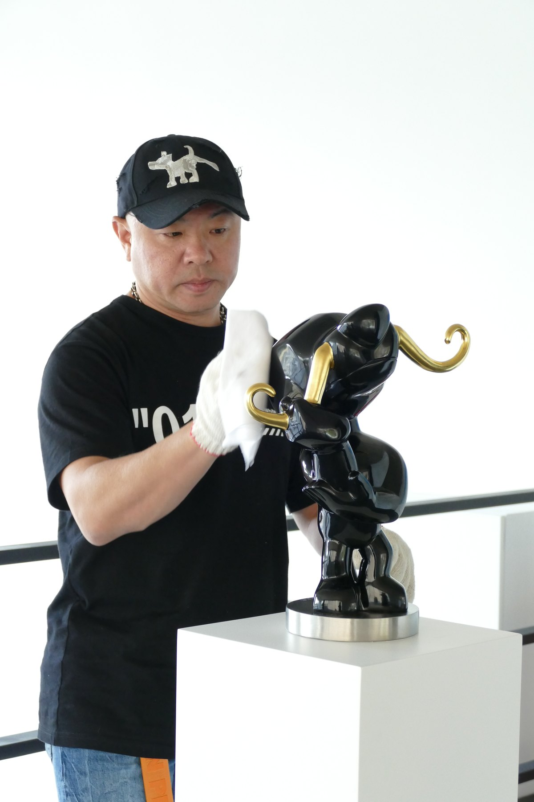
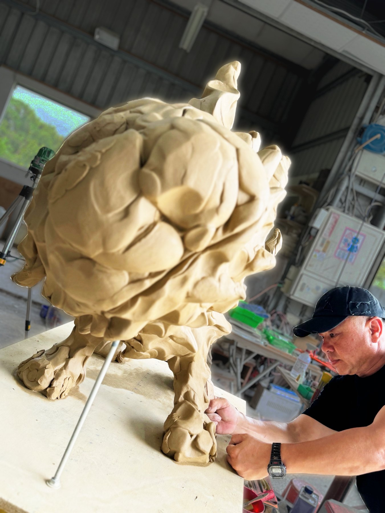

Art Taichung; Millennium Hotel Taichung exhibition; Art Taipei.台中國際藝術博覽會；台中日月千禧展覽；台北國際藝術博覽會。
ARTIST · 藝術家
Poren Huang
黃柏仁





Born in Taichung in 1970, Poren Huang graduated from the sculpture program at Fu-Hsin Trade & Arts School. Since the 1990s, he has developed a distinct sculptural language through concise lines, structured planes and a playful, animated sensibility.
Dogs have been the recurring heart of Huang’s practice since 2003. In bronze and stainless steel, they become companions and mirrors: direct, humorous figures through which the artist considers human behaviour and emotion.
黃柏仁生於1970年台中，畢業於復興商工雕塑組。自2003年起以「狗」為創作核心，透過銅與不鏽鋼發展《狗札記》系列；作品以幽默而溫厚的視角，邀請觀者重新凝視人性與情感。
Selected CV
DIFC West Wing Gate Building, Dubai; Taichung City Government Chief Executive Area Invitational Exhibition; Rotterdam, Netherlands exhibition; Art Taipei.杜拜 DIFC West Wing Gate Building；台中市政府首長特區邀請展；荷蘭鹿特丹展覽；台北國際藝術博覽會。
The Dog's Notes series has been exhibited internationally in New York, Germany, the Netherlands, Norway, the United Kingdom, Italy, Lebanon, Dubai and Japan.狗札記系列作品展覽遍及紐約、德國、荷蘭、挪威、英國、義大利、黎巴嫩、杜拜、日本等地。
La Bella Vita, Continental Development Lige Exhibition; Night Art Fair Taipei; Tainan Art Museum, Ailomon: The Post-Spiritual Paradise of Humans and Animals.La Bella Vita 大陸建設麗格展覽；台北夜藝博；台南市立美術館「愛洛蒙－人與動物的後心靈樂園」展覽。
Belvedere Art Space group exhibition, Dubai; The Dog's Notes works Enraptured, I'm Not Happy Now! and Generation to Generation entered public and institutional collections.杜拜 Belvedere Art Space 群展；《出神》、《不爽》、《延續》等狗札記作品納入公共與機構典藏。
UNMASKED #2, group exhibition, aquabitArt gallery Berlin; KunstRAI Amsterdam with Okker Art Gallery.柏林 aquabitArt gallery「UNMASKED #2」群展；荷蘭阿姆斯特丹 KunstRAI，Okker Art Gallery。
Treasure Garden, Continental Development; PAPER REALITY, group exhibition, aquabitArt gallery Berlin.大陸建設宝格 Treasure Garden 展覽；柏林 aquabitArt gallery「PAPER REALITY」群展。
The Dog's Notes exhibitions in Beirut, Lebanon; Novotel Taipei Taoyuan International Airport; Shin Kong Mitsukoshi; NORTH Kunstmesse, Aalborg, Denmark.黃柏仁「狗札記」展於黎巴嫩貝魯特、諾富特華航桃園機場飯店、新光三越；丹麥奧爾堡 NORTH Kunstmesse。
Artist Talk and solo exhibition at aquabitArt gallery Berlin; PAN Amsterdam; Art Breda; Galleri Ramfjord, Oslo; Rotterdam Contemporary Art Fair; London Art Fair; FOR REAL | I amsterdam.柏林 aquabitArt gallery 藝術家座談與個展；PAN Amsterdam；Art Breda；挪威奧斯陸 Galleri Ramfjord；鹿特丹當代藝術博覽會；倫敦藝術博覽會；FOR REAL | I amsterdam。
Exhibitions and art fairs in Amsterdam, Dublin, Oslo, London, Copenhagen, New York, Miami and Berlin, including The Dog's Notes solo exhibition at aquabitArt gallery Berlin.作品展出於阿姆斯特丹、都柏林、奧斯陸、倫敦、哥本哈根、紐約、邁阿密與柏林，並於柏林 aquabitArt gallery 舉辦「狗札記 The Dog's Notes」個展。
The Dog's Notes solo exhibition, WAH Center, New York.「狗札記」個展，WAH 藝術中心，紐約。
I'm Not Happy Now! from The Dog's Notes series was collected by Art Bank Taiwan, Ministry of Culture.文化部藝術銀行典藏狗札記作品《不爽》。
Participated in Art Taipei and Art Beijing; invited exhibitions at the National Museum of Natural Science; selected international art fairs in Seoul, Shanghai and Beijing.參與台北國際藝術博覽會、藝術北京，並受邀於國立自然科學博物館特展；作品展出於首爾、上海、北京等國際藝術平台。
A Wise Mind from The Dog's Notes series was collected by the National Taiwan Museum of Fine Arts.國立台灣美術館典藏狗札記作品《智者的思維》。
Happy Time from The Dog's Notes series was collected by the National Taiwan Museum of Fine Arts.國立台灣美術館典藏狗札記作品《快樂時光》。
The Dog's Notes — Poren Huang Sculpture Exhibition, Taichung County Cultural Center; Iron-Wood Jungle / The Dog's Notes catalogue published by Taichung County Cultural Center.「狗札記－黃柏仁雕塑展」於台中縣立文化中心；《鐵木叢林・狗札記》作品集由台中縣立文化中心出版。
Rocking Horse was collected by Taichung County Cultural Center.作品《木馬》由台中縣立文化中心典藏。
The iron sculpture Sharpshooter was included in a senior high school fine arts textbook.鐵雕作品《神射手》編列入高中美術課本。
International Sculpture Exhibition, Graz, Austria.奧地利格拉茲國際雕塑展。
First Prize in Sculpture and Mayor's Award, Central Taiwan Art Exhibition; Art Taipei.中部美展雕塑類第一名及市長獎；台北國際藝術博覽會。
Graduated from the Sculpture Department, Fu-Hsin Trade & Arts School.復興商工雕塑組畢業。
Born in Taichung, Taiwan.生於台灣台中。